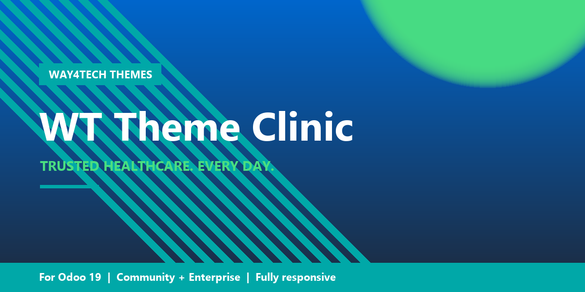

Live Preview
Real screenshots from a working install. Replace copy and doctor photos to launch your clinic site in hours.


Trust-first, conversion-focused theme for clinics, hospitals, dental practices and healthcare brands.
medical theme · clinic website · hospital · dental · pediatrics · cardiology · gynaecology · aesthetic medicine · physiotherapy · veterinary · chiropractic · Odoo 19 · Odoo 18 · community edition · enterprise alternative · responsive · dynamic snippets · way4tech

Real screenshots from a working install. Replace copy and doctor photos to launch your clinic site in hours.
Calming medical-teal palette, rounded shapes, soft circular accents. Every snippet shaped around the patient journey — trust, services, doctors, booking, FAQ, contact.
Teal + trust-blue + mint accent. Plus Jakarta Sans display + Inter body. Soft shadows, rounded corners — feels like a sanctuary.
Hero with stats, services by speciality, why-choose-us pillars, doctor cards, stats band, appointment CTA, testimonials, FAQ accordion, contact form.
Home, About, Services, Doctors, Contact. Wired into the top menu. Edit photos and bios — your clinic site is live the same day.
Two CTAs in the hero, "open hours" badge, sticky appointment band, FAQ that handles common objections. Built to convert visits into bookings.
Tested down to 320px. Stats stack, hero collapses to single column, accordion works on touch — every layout adapts cleanly.
Depends only on the standard website module. No enterprise dependency. Works on Community + Enterprise + SH.
Drop-in fit for any healthcare brand:
| Odoo Version | 19.0 (community + enterprise) |
| Required Module | website (standard) |
| Optional | website_form, appointment (auto-detect) |
| License | OPL-1 |
Need adjustments, additional snippets, or full clinic-website setup? We do that.